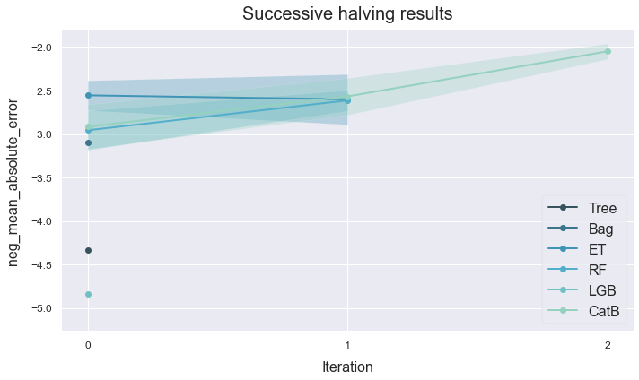

Successive halving
This example shows how to compare multiple tree-based models using successive halving.
Import the boston dataset from sklearn.datasets. This is a small and easy to train dataset whose goal is to predict house prices.
Load the data
# Import packages
import numpy as np
import pandas as pd
from sklearn.datasets import load_boston
from atom import ATOMRegressor
# Load the dataset's features and targets
X, y = load_boston(return_X_y=True)
Run the pipeline
atom = ATOMRegressor(X, y, verbose=1, random_state=1)
<< ================== ATOM ================== >>
Algorithm task: regression.
Applying data cleaning...
Dataset stats ================= >>
Shape: (506, 14)
Scaled: False
----------------------------------
Size of training set: 405
Size of test set: 101
# We can compare tree-based models via successive halving
atom.successive_halving(['tree', 'bag', 'et', 'rf', 'lgb', 'catb'],
metric='mae',
bagging=5)
Running pipeline ============================= >>
Metric: neg_mean_absolute_error
Run 0 (17% of set) ============================>>
Models in pipeline: Tree, Bag, ET, RF, LGB, CatB
Size of training set: 67
Size of test set: 101
Results for Decision Tree:
Fitting -----------------------------------------
Score on the train set --> neg_mean_absolute_error: -0.0000
Score on the test set --> neg_mean_absolute_error: -3.3257
Time elapsed: 0.007s
Bagging -----------------------------------------
Score --> neg_mean_absolute_error: -4.3307 ± 0.5250
Time elapsed: 0.020s
-------------------------------------------------
Total time: 0.030s
Results for Bagging Regressor:
Fitting -----------------------------------------
Score on the train set --> neg_mean_absolute_error: -1.3054
Score on the test set --> neg_mean_absolute_error: -2.6950
Time elapsed: 0.020s
Bagging -----------------------------------------
Score --> neg_mean_absolute_error: -3.0957 ± 0.2677
Time elapsed: 0.079s
-------------------------------------------------
Total time: 0.103s
Results for Extra-Trees:
Fitting -----------------------------------------
Score on the train set --> neg_mean_absolute_error: -0.0000
Score on the test set --> neg_mean_absolute_error: -2.1541
Time elapsed: 0.088s
Bagging -----------------------------------------
Score --> neg_mean_absolute_error: -2.5554 ± 0.1708
Time elapsed: 0.364s
-------------------------------------------------
Total time: 0.456s
Results for Random Forest:
Fitting -----------------------------------------
Score on the train set --> neg_mean_absolute_error: -1.1509
Score on the test set --> neg_mean_absolute_error: -2.4143
Time elapsed: 0.111s
Bagging -----------------------------------------
Score --> neg_mean_absolute_error: -2.9574 ± 0.2253
Time elapsed: 0.509s
-------------------------------------------------
Total time: 0.625s
Results for LightGBM:
Fitting -----------------------------------------
Score on the train set --> neg_mean_absolute_error: -3.4205
Score on the test set --> neg_mean_absolute_error: -4.5600
Time elapsed: 0.024s
Bagging -----------------------------------------
Score --> neg_mean_absolute_error: -4.8393 ± 0.2682
Time elapsed: 0.068s
-------------------------------------------------
Total time: 0.097s
Results for CatBoost:
Fitting -----------------------------------------
Score on the train set --> neg_mean_absolute_error: -0.0806
Score on the test set --> neg_mean_absolute_error: -2.3984
Time elapsed: 0.760s
Bagging -----------------------------------------
Score --> neg_mean_absolute_error: -2.9165 ± 0.2564
Time elapsed: 3.112s
-------------------------------------------------
Total time: 3.875s
Final results ========================= >>
Duration: 5.188s
------------------------------------------
Decision Tree --> neg_mean_absolute_error: -4.331 ± 0.525 ~
Bagging Regressor --> neg_mean_absolute_error: -3.096 ± 0.268 ~
Extra-Trees --> neg_mean_absolute_error: -2.555 ± 0.171 ~ !
Random Forest --> neg_mean_absolute_error: -2.957 ± 0.225 ~
LightGBM --> neg_mean_absolute_error: -4.839 ± 0.268 ~
CatBoost --> neg_mean_absolute_error: -2.916 ± 0.256 ~
Run 1 (33% of set) ============================>>
Models in pipeline: ET, CatB, RF
Size of training set: 135
Size of test set: 101
Results for Extra-Trees:
Fitting -----------------------------------------
Score on the train set --> neg_mean_absolute_error: -0.0000
Score on the test set --> neg_mean_absolute_error: -2.2361
Time elapsed: 0.099s
Bagging -----------------------------------------
Score --> neg_mean_absolute_error: -2.6016 ± 0.2890
Time elapsed: 0.418s
-------------------------------------------------
Total time: 0.520s
Results for CatBoost:
Fitting -----------------------------------------
Score on the train set --> neg_mean_absolute_error: -0.2835
Score on the test set --> neg_mean_absolute_error: -2.4196
Time elapsed: 0.873s
Bagging -----------------------------------------
Score --> neg_mean_absolute_error: -2.5681 ± 0.2119
Time elapsed: 3.423s
-------------------------------------------------
Total time: 4.300s
Results for Random Forest:
Fitting -----------------------------------------
Score on the train set --> neg_mean_absolute_error: -0.9820
Score on the test set --> neg_mean_absolute_error: -2.5055
Time elapsed: 0.132s
Bagging -----------------------------------------
Score --> neg_mean_absolute_error: -2.6144 ± 0.1188
Time elapsed: 0.603s
-------------------------------------------------
Total time: 0.739s
Final results ========================= >>
Duration: 5.561s
------------------------------------------
Extra-Trees --> neg_mean_absolute_error: -2.602 ± 0.289 ~
CatBoost --> neg_mean_absolute_error: -2.568 ± 0.212 ~ !
Random Forest --> neg_mean_absolute_error: -2.614 ± 0.119 ~
Run 2 (100% of set) ===========================>>
Models in pipeline: CatB
Size of training set: 405
Size of test set: 101
Results for CatBoost:
Fitting -----------------------------------------
Score on the train set --> neg_mean_absolute_error: -0.3978
Score on the test set --> neg_mean_absolute_error: -1.8772
Time elapsed: 1.252s
Bagging -----------------------------------------
Score --> neg_mean_absolute_error: -2.0501 ± 0.0892
Time elapsed: 5.481s
-------------------------------------------------
Total time: 6.737s
Final results ========================= >>
Duration: 6.740s
------------------------------------------
CatBoost --> neg_mean_absolute_error: -2.050 ± 0.089 ~
Analyze results
# Note that the results dataframe now is multi-index
atom.results
| name | score_train | score_test | time_fit | mean_bagging | std_bagging | time_bagging | time | ||
|---|---|---|---|---|---|---|---|---|---|
| run | model | ||||||||
| 0 | Tree | Decision Tree | -0.000000e+00 | -3.325743 | 0.007s | -4.330693 | 0.525026 | 0.020s | 0.030s |
| Bag | Bagging Regressor | -1.305373e+00 | -2.695050 | 0.020s | -3.095663 | 0.267668 | 0.079s | 0.103s | |
| ET | Extra-Trees | -2.256238e-14 | -2.154089 | 0.088s | -2.555434 | 0.170823 | 0.364s | 0.456s | |
| RF | Random Forest | -1.150866e+00 | -2.414297 | 0.111s | -2.957400 | 0.225311 | 0.509s | 0.625s | |
| LGB | LightGBM | -3.420518e+00 | -4.559962 | 0.024s | -4.839315 | 0.268167 | 0.068s | 0.097s | |
| CatB | CatBoost | -8.055503e-02 | -2.398431 | 0.760s | -2.916470 | 0.256428 | 3.112s | 3.875s | |
| 1 | ET | Extra-Trees | -2.315185e-14 | -2.236079 | 0.099s | -2.601648 | 0.289034 | 0.418s | 0.520s |
| CatB | CatBoost | -2.835499e-01 | -2.419625 | 0.873s | -2.568085 | 0.211868 | 3.423s | 4.300s | |
| RF | Random Forest | -9.819778e-01 | -2.505465 | 0.132s | -2.614416 | 0.118758 | 0.603s | 0.739s | |
| 2 | CatB | CatBoost | -3.977985e-01 | -1.877205 | 1.252s | -2.050118 | 0.089185 | 5.481s | 6.737s |
# Plot the successive halving's results
atom.plot_successive_halving()
